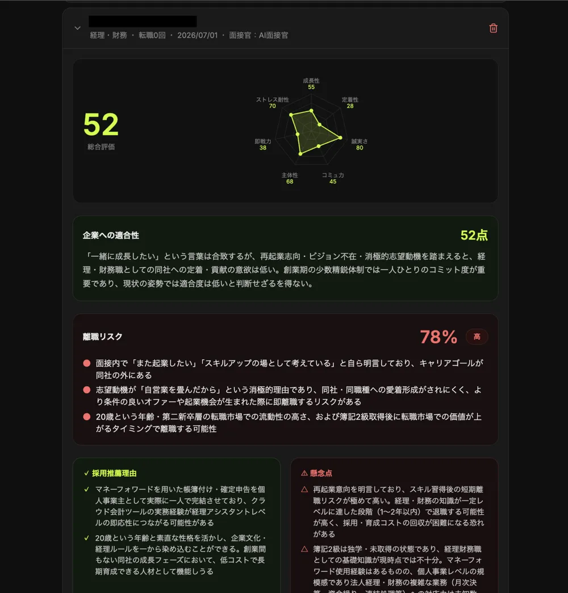

採用担当の工数が足りない
書類選考や一次面接の日程調整・実施だけで、担当者が疲れきってしまう。
志望する職種に合わせて、AIの面接官が質問します。声で答えるだけで練習でき、終わるとすぐに評価と改善点が返ってきます。
評価は「伝える力」「論理的に考える力」など7つの力を5段階で。点数の根拠として、あなたが実際に話した言葉を引用します。根拠にできる発言がない力は、評価しません。
当社は推薦や仲介を行いません。企業にかかる料金はプロフィールの閲覧チケットだけで、成功報酬はいただいていません。年齢・性別での絞り込みもできない仕組みです。
評価の中身や、プロフィール公開・オファーの機能はどのプランでも同じです。
Service flow
書類選考・面接日程の調整・評価のまとめ。ばらばらになりがちな採用の工程を、ひとつの流れでつなぎます。
Challenge
現場の採用担当者から、こんな声を数多くいただいています。
書類選考や一次面接の日程調整・実施だけで、担当者が疲れきってしまう。
面接官によって評価がばらばらで、合否の判断に一貫性が保てない。
応募が集まるほど、書類選考だけで丸1日つぶれてしまうことも。
面接のための移動や日程調整が、遠方の候補者ほどネックになる。
感覚頼りの採用判断が、早期離職につながってしまうことがある。
良い人材がどこにいるか分からず、応募を集める入口の時点で苦労する。
What changes
面接と書類選考を、AIが24時間365日代わりに担当します。
| 導入前 | 導入後 | |
|---|---|---|
| 面接できる日時 | 平日の営業時間のみ | 24時間365日、候補者の都合で受けられる |
| 面接官の準備 | 調整・日程合わせに数日 | URLを送るだけ。準備はいらない |
| 評価のブレ | 面接官によって差が出る | AIスコアで全候補者を同じ基準で比較 |
| 書類選考の工数 | 1件ずつ人の目で確認 | AIが自動で採点・ランク付け |
| 候補者の辞退 | 日程が合わずに離脱 | いつでも受けられるので離脱が大きく減る |
| 引き継ぎ | 面接官の記憶やメモ頼み | 録画とAIレポートですぐに共有 |
Features
選考・面接・評価・スカウトまで、採用に必要な機能をひとつのサービスに。

Why Gachi Career AI
採用の「入口」から、その先の「定着」まで見据えた設計です。
選考・面接・評価・母集団形成まで、採用のすべてをAIがつなぎます。
企業ごとの評価軸をAIが一貫して当てはめ、面接官による判断のブレを抑えます。
採用のその先、定着まで見据えたスコアで、ミスマッチを未然に防ぎます。
AI表情解析・音声AI分析を備えた、次世代の面接体験を提供します。
良い人材を待つだけでなく、こちらから直接アプローチできます。
URLを発行するだけで、365日いつでも候補者の都合に合わせて面接ができます。
日程調整はゼロ。URLを送るだけで、最短で翌日には面接が終わります。
面接担当者の人件費や調整の手間がかかりません。月額なしの従量課金から始められます。
書類の記載と面接での回答の食い違いを、面接全体を通してチェックします。
For these companies
Pricing
書類選考AIは、どのプランでも無料・無制限。まずは月額なしの従量課金で試してから、月の面接件数に合わせてプランを選べます。
独自アバターは、どのプランでも別途初期費用で作れます（従量課金 ¥110,000／ライト ¥77,000／プロ ¥55,000、いずれも税込）。くわしくは ガチキャリAIの料金ページ をご覧ください。
Contact
ガチキャリAIの導入・資料請求、ガチキャリやPOSシステムのご相談、採用へのご応募など、どんなことでも受け付けています。